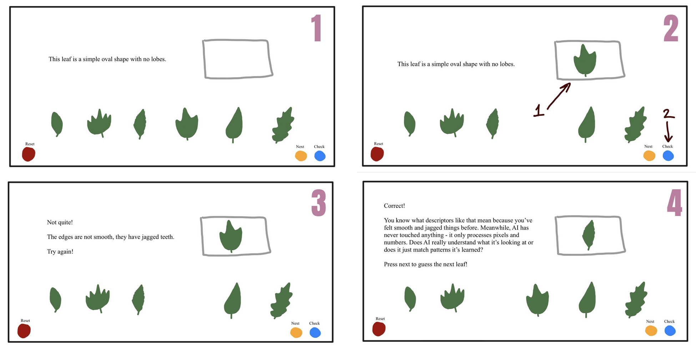
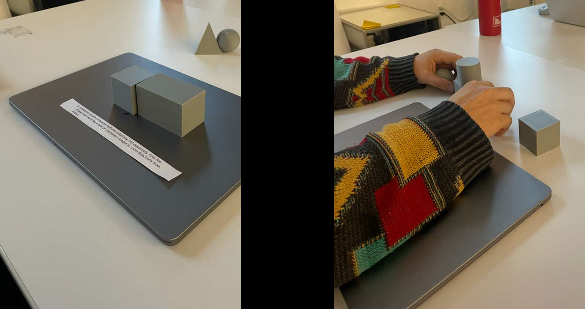
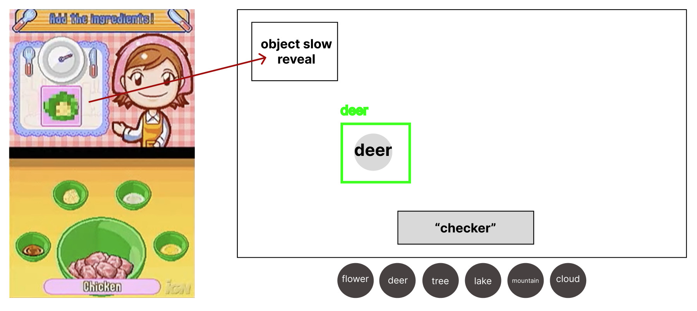
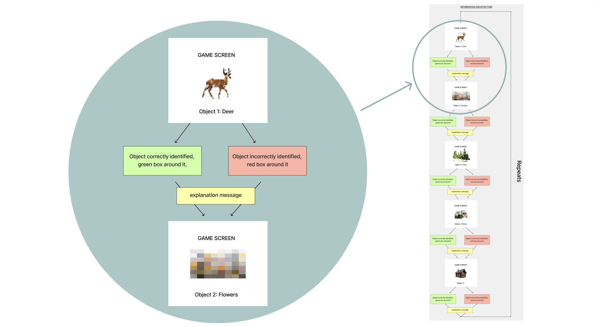
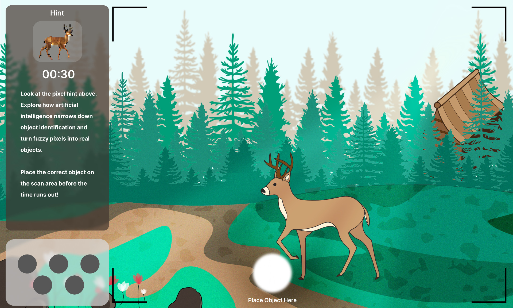
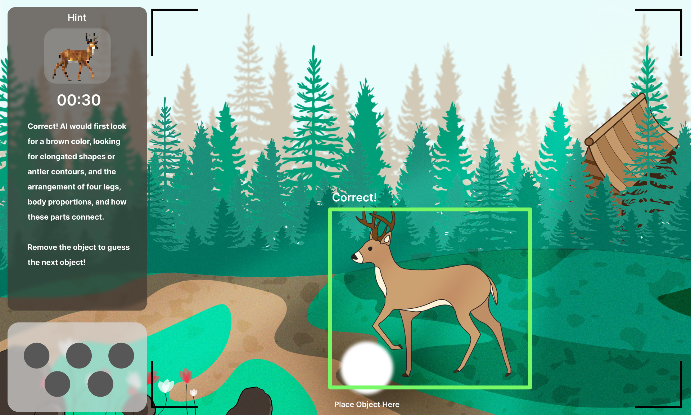
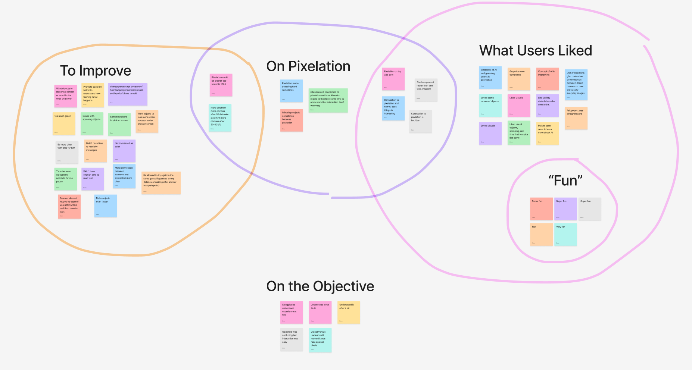

Through AI's Eyes
The Museum of Science in Boston partnered with the Parsons School of Design in a collaborative course on rapid prototyping for interaction design. I led my team of four through concept ideation, research, information architecture, and prototyping, meeting constantly with stakeholders and our developer, before leading usability testing on the functional high-fidelity prototype inside the museum.
How might we create and test a high-fidelity prototype that teaches museum visitors about a modern scientific revolution?
The Museum of Science partnered with Parsons around its new FAST table technology, and wanted to know whether it was worth continuing to invest in.
Our charge was concrete: build a high-fidelity prototype for the table, then run in-person usability testing with real visitors to investigate whether the museum should keep developing the platform.
The platform
FAST table
"Flexible, Accessible Strategies for Timely Digital Exhibit Design," a tangible tabletop system that scans physical objects via QR codes, letting visitors interact with a digital exhibit by placing real things on its surface.
An interactive game that puts the visitor in the role of an AI identifying objects in a nature scene.
Instead of words, the system shows visual prompts, a pixelated image of one of five objects that slowly comes into focus. The visitor has 30 seconds to decide which object in the scene it is and place the matching 3D print on the platform, where a unique QR code is scanned.
I leaned into the idea of "productive struggle." By playing, visitors feel how hard it can be for AI to identify objects — these systems use patterns, colors, and shapes to make educated guesses, and just like people, they get confused when objects look alike or clues are vague.
For adults, the deeper message is about why training data matters in machine learning. When AI misidentifies objects it can affect real people, from self-driving cars mistaking shadows for obstacles to photo apps mislabeling faces.
Storytelling and visual prompts to create an educational experience.
I started our ideation with leaves, an unbiased, widely understood object. A visitor would see six similar-but-distinct objects, the system would give a deliberately vague prompt, and they'd guess which one it meant. A right answer moved to the next prompt; a wrong answer earned a slightly more specific clue.
Storyboarding the concept for stakeholders

Playtesting with simple shapes
We ran playtesting with five participants, who placed their object of choice on top of the computer's logo. Most set the possible shapes off to the side as a visual aid to narrow their options, and everyone guessed correctly within the first two attempts. We learned we needed clear instructions for removing previous objects, and that participants fidgeted with the blocks, so the final 3D prints had to be durable.

More importantly, we realized the written prompts weren't centered enough on AI. There was a disconnect between AI object recognition and prompt engineering, a gap in the concept. Stakeholders also wanted the objects to be completely different from one another.
Visual prompts and a shared world
As a solution to the AI concept disconnect, I proposed that we give the user visual prompts rather than written prompts. This would be similar to how the game Cooking Mama by Square Enix presents to players a pixelated image that slowly depixelates of the next ingredients that players need to pick before the image becomes clear.

To align with the stakeholder needs of the objects all being different, I proposed that we have the objects live in the same world so we can still tell a story with the experience. The world I suggested which we continue with was a forest scene with the user viewing it through a trail camera, with the objects being a deer, tree, flower, rock, and cabin. The following is the information architecture I created:

The rest of my teammates each respectively created the visuals assets, worked on the Unity development of it using the template the museum gave us, and created the 3D prints of the objects. I led the planning and creation of the high-fidelity wireframes in Figma for development to work with. I made sure that the camera details were minimal to not be distracting and the different components of the experience were labeled for user ease of understanding.
High-fidelity wireframes for development

In the 30 second countdown, the image would come more into focus. The circles at the bottom represent the five different 3D printed objects. Despite the prompt being visual, we felt it was important to still have a written statement about the objective of the experience and connect it to AI.

When the user guesses it right, the object is highlighted in the scene by a green box. If they guess it wrong, it's a red box. Either way, the explanation of how AI would think about it remains the same, going back to the guessing screen for the next object. The system cycles through them at random, with no end.
Testing in the Museum of Science with the target audience.
We tested the prototype on the museum floor with 15 visitors between the ages of 4 and 65, focused on one-on-one interviews and observing behavior rather than collecting any identifiable data.
From raw observation to themes
One teammate ran an onboarding speech, two observed behavior and encouraged thinking out loud, and another ran post-experience interviews. I led the analysis, grouping the data into four overlapping categories: areas to improve, comments on pixelation, what users liked, and remarks on the objective.

To my surprise, every child under 10 didn't know what AI was. While that removes the AI-learning layer for the youngest visitors, it could spark at-home conversations between kids and parents, and in the meantime, the experience still works as a simple, educational trail-camera guessing game in its own right.
Looking forward into the future of FAST table experiences.
Visitors enjoyed the experience overall. The visual prompts should stay (they're engaging and resonate) and the level of pixelation hit our goal of productive struggle: only 2 of 9 comments on pixelation saw it as a drawback. Much of the "what to improve" feedback traced back to a gap between the designs handed to development and the final build, but it's valuable insight into what matters to visitors mid-experience.
Label the puck scanner
The table needs a built-in label for the scanner so it's obvious where to place an object.
Pace the feedback
Visitors need time to read system messages — add a pause between object hints.
Clarify the rules
Make it clear whether a visitor can pick a second object before the timer runs out.
Read text aloud
Much of the museum's audience is young and shorter — on-screen text should be voiced so the experience is inclusive of those who can't yet read or can't see the top of the table.
The biggest thank you to the Museum of Science for this opportunity, and to Rachel Fyler, Sunewan Paneto, Bobbie Oakley, Ben Wilson, Dorian Juncewicz, Meg Rosenburg, Becki Kipling, Tim Porter, and Chris Brown for their guidance. I'm so honored to have had this experience.